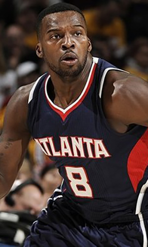

|  |
Матчи |
55 |
|
Передачи (всего/среднее) |
155 |
2.8 |
| В основе |
|
|
Подборы в защите (всего/среднее) |
71 |
1.3 |
| Время (всего/среднее) |
832:18 |
15:08 |
Подборы в атаке (всего/среднее) |
8 |
0.1 |
| Очки (всего/среднее) |
299 |
5.4 |
Подборы (всего/среднее) |
79 |
1.4 |
| 2-очковые броски (всего/среднее) |
77/165 |
1.4/3 |
Перехваты (всего/среднее) |
29 |
0.5 |
| 2-очковые броски (% реализации) |
46.7% |
|
Потери (всего/среднее) |
49 |
0.9 |
| 3-очковые броски (всего/среднее) |
40/127 |
0.7/2.3 |
Блокшоты (всего/среднее) |
2 |
0 |
| 3-очковые броски (% реализации) |
31.5% |
|
Блокшоты соперника (всего/среднее) |
19 |
0.3 |
| Штрафные броски (всего/среднее) |
25/31 |
0.5/0.6 |
Фолы (всего/среднее) |
33 |
0.6 |
| Шелвин Мэк |
Штрафные броски (% реализации) |
80.6% |
|
Коэффициент полезности (всего/среднее) |
282 |
5.1 |